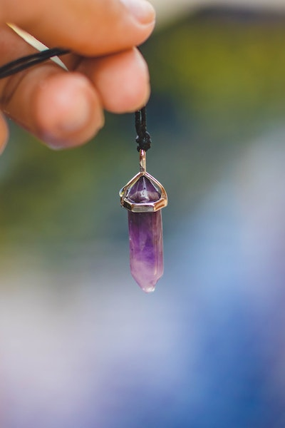
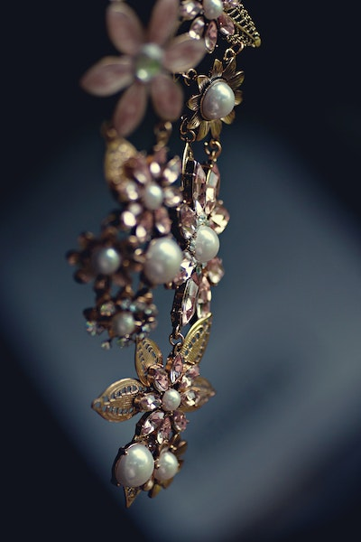

Women, jewellery is something that remains close to their hearts. There is no dress that can go without jewellery. Be it earrings or necklaces, bracelets or rings, a wardrobe is incomplete without some trendy pieces.But from where did the trend of wearing jewellery come? The history of jewellery is long, with different uses among different cultures. It has endured for thousands of years and has provided various insights into how ancient cultures worked.The Jewellers Gallery specialises in fine ancient jewellery. All designed are found from the old egyptian and other countries history.
  Rockyrn.